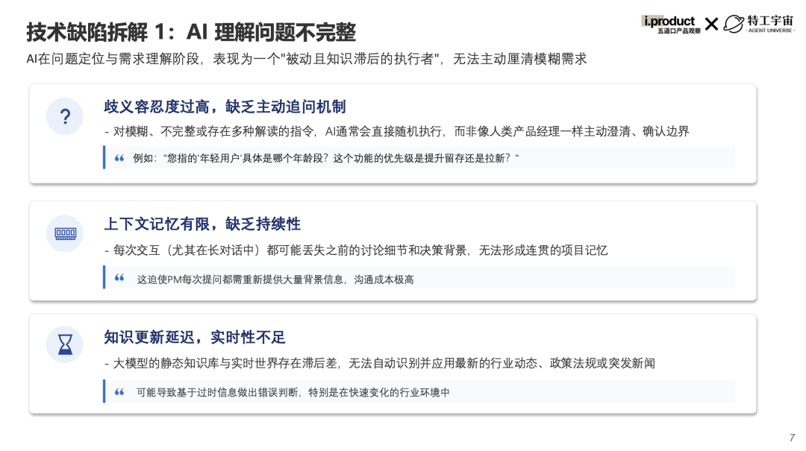
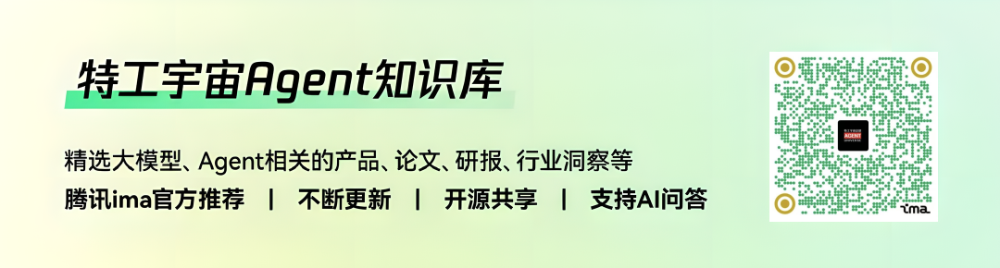

阿里 CEO 吴泳铭昨日在云栖大会上提出了 ASI 的概念，判断了 AI 从“学习人”、到“辅助人”、再到“超越人”的发展路径。在各行业借助 AI 工具掀起效率变革的浪潮下，产品经理正面临着是否采用 AI 的抉择困境。一方面，AI 具备显著提升工作效率的潜力；另一方面，受技术缺陷与使用门槛的制约，实际应用中存在诸多问题 —— 指令模糊致使输出结果偏离预期、分析缺乏行业深度洞察、格式化成果需多次调整，AI 似乎始终难以成为产品工作流程中的常规工具。
清华互联网产品研究协会（五道口产品观察）联合特工宇宙，从现状痛点到落地实践，再到职业进化路径，万字白皮书拆解 AI 与产品工作的适配方式，助力突破 AI 使用困局。
产品经理使用 AI 现状
当 AI 在各行业掀起效率革命，产品经理群体对 AI 的应用体验呈现复杂性，并非均能通过 AI 实现高效工作。对比 AI 对写代码效率的大幅提升，仅32% 的产品经理认为 AI 显著提升了自身工作效率；超两成产品经理表示 AI 的辅助作用有限，仅能在部分特定工作流程中发挥价值；另有3% 的产品经理认为 AI 几乎无法提供有效帮助，其工作效果甚至不及自主完成。
为什么 AI 没能顺利成为产品经理的提效工具？核心原因在于 AI 自身技术层面的局限，以及由技术局限衍生的系列实操问题。
其中，技术层面有三方面原因，包括理解问题不完整、分析问题不深入、产出结果不可用。如在“理解问题不完整”这一方面，AI 在需求调研阶段表现出明显的被动性，面对模糊指令时无法主动澄清以明确需求边界；同时存在上下文记忆能力薄弱的问题，在长对话场景中易丢失前期讨论细节，难以形成连贯的项目认知。
比如，对于分析“电商 APP 会员积分功能的优化方向”这一命题，传统流程下，产品经理会先基于用户调研、数据指标进行归因分析，发现老客在积分使用上更易出现闲置状态，得出潜在更可行的优化方向——利用老客闲置的积分、激活老客的购买行为。而在使用 AI 研究这一命题时，AI 并不具备且也不会主动追问 “目标用户锚定新客还是老客”等必要信息，而只能根据提供的有限信息直接输出泛化建议。只有当使用者提供完整的项目信息时，AI才能给出有效建议。

除此之外，分析问题不深入（无法像人一样提出“正确”的问题，也无法深入使用各种工具如竞品体验）、产出结果不可用（无法像人一样做出逻辑严谨、图文并茂的立项报告/汇报文档）的技术缺陷也直接限制了 AI 在实际工作场景中的效能发挥。
而技术的缺陷又导致了一系列衍生的实操问题，包括“没能想这个到能用 AI 做”、“不懂如何正确地发挥出 AI 的最大价值”、和“AI 用起来太麻烦，还不如自己做”。如对于“用 AI 太麻烦”这一点，实际使用时、调 AI 损耗的时间投入可能超出其节省的时间成本。
延续前面提到的“电商 APP 会员积分功能的优化方向”命题。要让 AI 能够最终写出完整可用的方案，需要提供的背景信息包含但不限于：①会员积分功能相关的历史文档；②目标用户在积分获取、使用行为的相关数据；③目标用户的访谈录音、纪要等资料；④部门各方资源情况、对该项目的态度；⑤相关合规要求等；仅是汇总并整理信息输入给 AI 就需要一天时间。
而且无法保证 AI 能充分理解材料的内容、分清主次优先级、给出足够满意的结果，可能还需要反复调整 Prompt 来确保输出质量。相比之下，凭自己脑海中完整的认知，直接打开文档写大纲和要点，可能反而只需要一两个小时。
虽然种种问题成为了产品经理接受 AI、深度使用 AI 的直接阻碍，但在某些“细分”、“确定性”的产品工作环节里，AI 已具备一定的应用价值。
AI 赋能产品工作流
为清晰呈现 AI 在产品工作流关键环节的实际应用价值，我们通过调研梳理了具体实践案例，可供产品经理直接实操应用。
以产品工作前期的「需求调研」环节为例，该环节常涉及用户访谈信息分类与总结的工作任务。在传统工作流程中，需要产品经理梳理每一份用户访谈，人工识别并判断用户情感、问题类型，一旦用户规模大、数据量多，就会占用大量时间与精力，去做这些重复且枯燥的打标工作。
而如果将 AI 接入工作流，可先预设 “用户情绪倾向”“核心问题类型” 等标准化标签，再借助 AI 工具对用户反馈的原始内容进行自动化标签匹配，有效替代人工逐份审阅反馈、手动分类的传统模式。
再看在产品日常工作的「方案设计」环节，以典型的 Demo 制作场景为例，在传统工作流程中，需要产品经理梳理出 PRD，在 Figma 等工具中一笔笔画出原型图，再与设计、研发等各方同学沟通、宣讲需求，最终进入排期、等待最终 Demo 完成，需要大量时间进行 Paper Work 与沟通对齐。
而 AI 介入后，即可先向 AI 明确原型设计需求，例如在指定页面增设功能入口，并基于该入口补充弹窗触发、邀约表单呈现形式及功能按钮布局等。待 AI 生成初始原型后，通过 2-3 轮细节优化迭代，即可快速输出完整可用的 Demo，实现可视化，显著缩短传统 Demo 制作流程的时间成本。
对于最为常见的「PRD 撰写」环节，AI 也可助力细节调整。在传统工作流程中，需要产品经理在原有 PRD 的基础上，通过不断思考、讨论、查漏补缺完善细节与边缘、边界场景，并耗费大量时间、将文字一笔笔细化成更简明易懂的流程图、表格或思维导图，便于宣讲时供研发同学阅读、理解。
如果利用 AI 完成该环节，可以先向 AI 描述产品功能与用户信息、填写板块动线，借助豆包头脑风暴各类边缘场景（如用户边界行为、数据边界、设备性能边界情况等等）及对应解决方案；再让 AI 依据交互文档，用 TRAE 结合 Mermaid 生成流程图，梳理逻辑后复制到在线编辑器修改，高效优化 PRD 细节。
除了上述场景外，结合具体例子的、更全面的 AI 提效技巧及实践，可以在完整版白皮书中阅读。我们也基于深度调研以及实际应用场景的真实试用，综合评估并推荐了一系列 AI 工具，希望能帮助大家在各类场景中提升效率。
产品经理如何适应 AI 时代
硅谷知名产品经理 Lenny Rachitsky 开展实验表明，在知识与背景输入充分的前提下，AI 在硬技能（如分析、调研等）领域的表现已能与人类比肩。让受访者盲选 AI 和人类产品经理的答案，在产品策略制定任务中，52%的人觉得 AI 答案更优；定义北极星指标时，这一比例达83%；即便是难度更大的ROI 估算任务里，也有 39% 的人认为 AI 答案更优。
从宏观层面的数据也验证了这个结论。哈佛大学论文数据显示，采用 AI 办公的公司相比不使用 AI 的公司，正在更大幅地减少初级岗位招聘。这清晰表明 AI 办公对企业招聘结构产生影响：初级岗位需求被压缩，更基础的、硬技能需求类岗位正在被 AI 替代。
那么，AI 能替代产品经理吗？调研显示，仅 13%的受访产品经理比较担心自己部分工作职能被 AI 替代。多数产品经理对 AI 替代岗位这事，依然保持着对自我竞争力的信心。这是因为软技能是 AI 短期内无法被替代的能力，而产品经理日常工作中了解信息、沟通谈判、讨论决策又往往占到了大部分时间。
所以，作为 AI 时代的产品经理，避免在 AI 冲击下被“螺丝钉化”、被“优化”的关键，在于成为“人机协作”的主导者，而非被动的执行者。主动锻炼跨部门沟通、向上汇报等软技能，转向更需要人际互动、战略思考决策的软技能属性岗位，是属于产品经理的破局之道。正如吴恩达所说，“软件开发本身未来将变得容易，这会让懂怎么决策构建什么的人才需求倍增”。
总结
从“用 AI 嫌麻烦”到“离开 AI 不行”，差的或许只是一次对工具价值的深度认知，和一套适配产品工作流的落地方法。《AI 重塑产品经理工作流》白皮书，不仅有大量真实问卷数据支撑，更藏着从试错到提效的实战技巧——小到具体场景的应用实践，大到职业护城河搭建，全流程拆解AI与产品工作的融合密码。
完整报告链接（或点击文末“阅读原文”获取）：
https://pan.quark.cn/s/c53a39ec4b81
加入特工宇宙 ima 知识库，阅读/下载完整白皮书，提前抢占 AI 时代产品人的效率高地。
